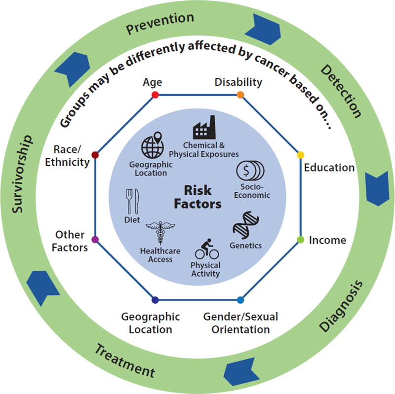
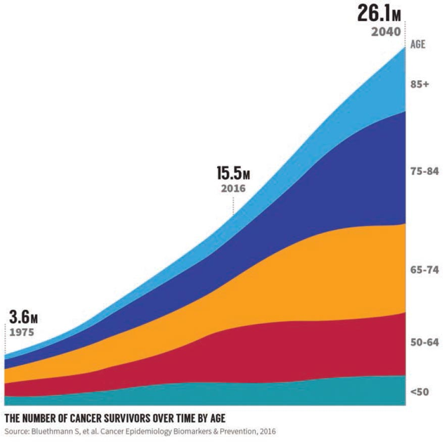

-
Message from the Director

Since the establishment of the Division of Cancer Control and Population Sciences (DCCPS) 20 years ago, the scientific experts in the division have been working closely with our funded investigators to make significant strides in advancing cancer control and population sciences research. In particular, molecular epidemiology, survivorship, health disparities, and outcomes research are among the fields that have shown remarkable progress as a result of NCI’s support for the population sciences. Many of our signature programs have been expanded substantially, including the Surveillance, Epidemiology, and End Results (SEER) Program, which initially covered 13% of the US population and now gathers data on approximately 28% of the population; with the current recompetition, we are aiming to increase that percentage even further. Our interagency and public-private partnerships now number in the dozens, and we have led advances in transdisciplinary science through initiatives such as the Transdisciplinary Tobacco Use Research Centers (TTURC), the Centers of Excellence in Cancer Communication Research (CECCR), the Transdisciplinary Research in Energetics and Cancer (TREC) centers, and the Centers for Population Health and Health Disparities (CPHHD). The division has also been infused with a greater diversity in research disciplines, complementing our public health and behavioral scientists with physicians, nurses, geographers, pharmacologists, geneticists, and informaticists.
As stewards of the trust and investment given to us, we’ve relied on continuous input from our extramural community. Key reports, such as National Academy of Medicine reports, the recent Blue Ribbon Panel Report, President’s Cancer Panel reports, NCI strategic plans, and a 2016 report to the NCI Board of Scientific Advisors on tobacco control research priorities, have all provided direction. We have also proactively engaged our research community by convening working groups and through a number of webinars and workshops.
Most recently, we have completed efforts to revitalize and reposition DCCPS for continued success in the coming decade. We have built a structure and appointed program leadership to better enable us to answer pivotal questions shaping our nation’s cancer control strategy. Going forward, we can now focus on responding to current and emerging challenges. Some of these challenges include the impact of changes in health care; establishing validity of new omics technologies; understanding the mechanisms through which obesity, nutrition, and physical activity influence cancer risk and prognosis; enhancing treatment data in SEER; reducing tobacco use in low-income populations; and addressing disparities in cancer control in rural areas of the United States.
Based on the expert advice we have received, we have identified those research priorities on which we will dedicate our most immediate, robust efforts. In this edition of our annual Overview and Highlights, we briefly describe those priorities and how we believe we can make the greatest impact in reducing the cancer burden in each of those areas.
To our research community and partners, we hope this publication will provide insight into areas of joint interest and collaboration. We are grateful for your expertise, dedication, and enthusiasm in helping us to identify these key priorities. And, we encourage you to continue to share your perspectives as we work together in support of the critical science needed to inform those policies and programs aimed at preventing, detecting, and treating cancer.
Robert T. Croyle, Ph.D.
-
Leadership at a Glance


-
Additional Information
Contact Us
BG 9609 MSC 9760
9609 Medical Center Drive
Bethesda, MD 20892-9760
Email Us1-800-4-CANCER
(1-800-422-6237)
Available in English and Spanish
Monday through Friday
8:00 a.m. to 8:00 p.m. ET -
DCCPS Priority
AreasIn this Overview and Highlights, DCCPS features division-wide priority areas that are responsive to NIH and NCI priorities and provide immense opportunities for advancement. However, DCCPS is not focusing on these priorities to the exclusion of other important areas of work. The division continues to invest in research across the cancer control continuum. Most of the grants we fund are investigator-initiated, not in response to a specific funding opportunity announcement. Potential grant applicants are encouraged to contact one of our program directors, whose contact information can be found on our website (https://cancercontrol.cancer.gov/).
For each priority below, we include examples of DCCPS initiatives and activities that illustrate ways in which the division is addressing these areas.
TOBACCO CONTROL RESEARCH
Tobacco use is still the leading cause of preventable death in the US. Despite half a century of progress in tobacco control and prevention, the devastating health and economic effects of tobacco use continue. In order to bring this epidemic to an end, innovative research is needed to address a myriad of factors, including a changing population of users, evolving patterns of initiation and use, new and modified tobacco products, and a complex and changing policy environment. We must implement what we already know, while not being “limited” by past strategies in tobacco control, and support cross-cutting research that accelerates progress in behavioral science relevant to tobacco use; treatment development and delivery; policy, system, and environmental changes; and public health interventions.
- As part of the NCI Cancer Moonshot initiative, supplemental funding is being provided to NCI-Designated Cancer Centers to develop tobacco cessation treatment capacity and infrastructure for cancer patients that should lead to the implementation and dissemination of a sustainable tobacco cessation treatment program within the cancer center. The primary aims of this funding are the successful integration of a cessation treatment program within the clinical care setting; an increase in tobacco cessation attempts and cessation efficacy among cancer patients; and improved prognosis of cancer patients.
- The Tobacco Control Research Branch recently released two new monographs as part of the NCI Tobacco Control Monograph Series. Monograph 21: The Economics of Tobacco and Tobacco Control was produced in collaboration with the World Health Organization. It presents extensive new evidence from low- and middle-income countries and examines global tobacco control efforts since the adoption and entry into force of the World Health Organization Framework Convention on Tobacco Control (WHO FCTC). Monograph 22: A Socioecological Approach to Addressing Tobacco-Related Health Disparities examines the current evidence surrounding tobacco-related health disparities across the tobacco use continuum—initiation, secondhand smoke exposure, current use, frequency and intensity, cessation, relapse, morbidity, and mortality— and the implications for future research and implementation of effective strategies.
- The Tobacco Control Research Branch, in partnership with the Fogarty International Center and the National Institute on Drug Abuse, co-funded a new round of seven research grants through the International Tobacco Control Research and Capacity Building Program. This initiative is now in its fourth round of grant funding and has supported research collaborations between US investigators and international partners across more than 30 countries around the world. Scientists are addressing a range of research topics, including waterpipe tobacco smoking, mHealth interventions for tobacco cessation, laboratory methods and biomarkers for measuring tobacco exposure, and the impact of community interventions to create smokefree spaces.
- In collaboration with the Food and Drug Administration’s (FDA’s) Center for Tobacco Products, Center for Food Safety and Applied Nutrition, and Office of the Commissioner, NCI released HINTS-FDA, a new nationally representative public-use dataset. This dataset combines the traditional Health Information National Trends Survey (HINTS) topics of health communication, cancer knowledge, and cancer risk behaviors with an assessment of the public’s knowledge of risk perceptions about new tobacco products, perceptions of tobacco product harm, tobacco product claims, diet supplement labeling, medical devices, and communications related to product recalls.
- Disparities in smoking prevalence are increasingly reflected in differences in lung cancer incidence and mortality. In response, NCI recently released the Funding Opportunity Announcement (FOA) US Tobacco Control Policies to Reduce Health Disparities to stimulate scientific inquiry focused on innovative tobacco control policies. Policy interventions, which target population-level outcomes, may be especially valuable for reducing health disparities in tobacco use because of their broad reach, ability to change social norms, and because they can be implemented at much lower cost than interventions that target individuals.
HEALTH DISPARITIES
In the United States, rates of preventable and detectable cancers are falling for the general population, but, for some cancers, minority communities are still suffering at disproportionate rates. NCI’s research priorities in the area of cancer disparities encompass the entire cancer control continuum, from identifying and understanding the role of biology in disparities, to cancer prevention, treatment, and survivorship. A variety of research efforts is needed to better understand and address the disparities that exist in cancer incidence, treatment access, and outcomes. In addition, research is needed to improve methodologies and selection of appropriate research sample sizes that will allow for generalization of findings to racial and ethnic subpopulations across the US.
- The Epidemiology and Genomics Research Program (EGRP) hosts a quarterly webinar series, Cancer Epidemiologic Research in Understudied Populations, to highlight innovative cancer epidemiology research in populations about whom there are limited data regarding cancer risks and outcomes that can inform cancer control policies and interventions. Examples of understudied populations include racial or ethnic groups; people subject to low socio-economic factors; non-metropolitan/rural populations; sexual and gender minorities; immigrant, migrant, or refugee populations; the incarcerated; and the elderly. DCCPS is also leading a workshop on this topic in December 2017.
- DCCPS is partnering with NIMHD, NIAAA, NIDCR, NIDA, and NIEHS on three FOAs to support innovative research to understand uniquely associated factors (biological, behavioral, sociocultural, and environmental) that contribute to health disparities or health advantages among US immigrant populations. Applications will be accepted until January 2020.
- In FY16, DCCPS announced supplemental funding to NCIDesignated Cancer Centers to conduct local data collection efforts to better characterize the populations and communities within the cancer center catchment areas, in order to plan intervention research and clinical trials recruitment, and improve population health and health equity. The Population Health Assessment in Cancer Center Catchment Areas initiative received applications from 53 of 69 cancer centers, and 15 were funded. Investigators are using at least 32 common measures in their surveys, and integrated data analyses are planned. A second round of this funding initiative is planned for FY18.
In the United States, rates of preventable and detectable cancers are falling for the general population, but, for some cancers, minority communities are still suffering at disproportionate rates.

EGRP Health Disparities WheelRURAL CANCER CONTROL
Evidence has shown that rural communities in the United States face disadvantages compared with urban areas, including higher poverty rates, lower educational attainment, and lack of access to health services. Populations living in rural areas have higher average death rates for all cancer sites combined, compared to populations in urban counties. Additionally, rural counties have higher incidence and death rates for cancers associated with smoking (e.g., lung and laryngeal cancers) and higher rates of incidence of cancers that can be prevented by screening (i.e., colorectal and cervical cancers).
Some of the higher incidence and mortality rates for cancer can be attributed to barriers in accessing health services in rural areas. Research has also shown that some of these cancer disparities relate to financial barriers (e.g., no insurance or insufficient insurance coverage), transportation issues, and lack of preventive and screening services. There are also rural-urban differences in health behaviors that are associated with cancer, including higher rates of tobacco use, alcohol consumption, and obesity, and less physical activity, less-frequent adoption of sun safety measures, and lower HPV vaccination rates in rural compared to urban areas.
Currently, DCCPS has few funded projects focused specifically on rural populations. This long-standing public health challenge calls for sustained support for research along the entire cancer control continuum. We also need to better understand the various definitions of the term “rural” and their uses in health research – and specifically for cancer control. Focused research initiatives would provide the groundwork to develop and implement cancer control programs that are sustainable in these communities across the United States. In recognition of this need and to inform NCI’s efforts to better address cancer disparities in rural communities, DCCPS staff are working closely with our agency partners and a wide variety of experts to analyze the current evidence and scale up our research efforts in rural cancer control.
Learn more at https://cancercontrol.cancer.gov/research-emphasis/rural.html.
ENHANCING SEER FOR RESEARCH USE
The Surveillance, Epidemiology, and End Results (SEER) Program has been supporting research on the diagnosis, treatment, and outcomes of cancer since 1973. SEER’s timely, complete, and accurate surveillance data, statistical methodologies and tools, and surveillance infrastructure all support cancer research in changing health care, technology, and scientific environments.
- In collaboration with the Department of Energy (DOE), NCI has initiated three pilot efforts to characterize and help overcome key precision oncology challenges at the molecular, patient, and population levels during the next three years. The SEER Program and DOE are co-leading the population-level pilot (Pilot 3) to deliver an infrastructure that will support the development of algorithms and informatics tools to enable a comprehensive, scalable, and cost-effective national cancer surveillance program that enhances the existing system, while also expanding the breadth of data captured to integrate biological, social, psychological and ecological variables to model for cancer outcomes.
- The acquisition of diagnostic, treatment, and outcomes information on cancer cases for population-based cancer surveillance currently involves a tremendous amount of manual data abstraction and information processing by expert staff. To improve the overall efficiency and quality of data abstraction and processing for cancer registries, and enable acquisition of more detailed clinical data that may not be reported currently, the Surveillance Research Program (SRP) is piloting the use of natural language processing (NLP) and deep learning tools and methods to extract and interpret linguistic information from health care documents (e.g., pathology reports, radiology reports, treatment summaries, clinical notes) that are created in electronic medical records systems where patients receive cancer care. SRP is working with multiple partners to set up a scalable platform for training, validating, and enabling the use of NLP for cancer registries and cancer surveillance.
- NCI and the American Society of Clinical Oncology (ASCO) announced a partnership to facilitate the exchange of information between CancerLinQ® participating oncology practices and the SEER Program. The partnership aims to put valuable population-level cancer data at oncologists’ fingertips, while also strengthening the nation’s cancer surveillance efforts through a national data sharing collaboration. This collaboration will provide cancer data that are difficult to capture from traditional surveillance methods, and the additional sources will enhance our ability to understand patient care and outcomes.
- The SEER Program is currently under a recompetition, with funding planned for FY 2018. The new structure laid out in this renewal will enable the SEER Program to expand its capacity to report data in more clinically relevant categories while providing an infrastructure that will support a broad set of cancer research objectives, from epidemiologic to clinical to genomics. This will entail expanding and enhancing the mechanisms through which SEER performs data capture and reporting so that it can more nimbly adapt to the changing cancer care environment and more accurately report cancer trends and outcomes.
INFECTION-RELATED CANCERS
In 2014, the President’s Cancer Panel released a report calling for a coordinated effort to increase the rates of vaccinations against human papillomavirus (HPV). The report, Accelerating HPV Vaccine Uptake: Urgency for Action to Prevent Cancer, calls increasing the rate of HPV vaccinations one of the most profound opportunities in cancer prevention today. The two HPV vaccines – Cervarix and Gardasil – both prevent the two types of HPV (HPV16 and HPV18) that cause 70% of all cervical cancers. Despite this, only 33% of adolescent girls and less than 7% of boys in the US have completed the recommended dose schedule of either vaccine. DCCPS is pursuing areas of research that could potentially lead to higher vaccination rates.
- In partnership with CDC, NCI is funding a Prevention Research Program Special Interest Project (SIP) titled Multilevel Communication Strategies to Promote HPV Vaccination Uptake to promote the development and testing of multilevel health communication strategies to increase HPV vaccination in underserved or high-risk populations. Funded studies under the SIP are expected to develop and test communication strategies that will enhance the acceptability of HPV vaccination, increase behavioral intentions to vaccinate among parents with vaccine-eligible children, and/ or increase behavioral intentions among providers to recommend HPV vaccination.
- In FY 2014, the division first funded cancer center supplements on HPV vaccination uptake. In FY 2017, we provided supplement funding to 12 additional NCIDesignated Cancer Centers to investigate local barriers, facilitators, and implementation strategies used to promote uptake of the HPV vaccine in regions of the US where adolescent uptake is low (ages 10-19). The Cancer Centers are part of the Research to Reality (R2R) community that includes a special focus on HPV vaccination uptake. Materials are available at https://researchtoreality.cancer.gov/learning-communities/ccchpv.
- Characteristics of the provider, parent/patient, and clinical setting can all affect whether a provider makes a recommendation for HPV vaccination, and whether that recommendation results in uptake of the vaccine. For this reason, DCCPS developed the FOA Linking the Provider Recommendation to Adolescent HPV Vaccine Uptake, to encourage research on how the health care delivery system enhances or inhibits the effectiveness of a provider’s recommendation of the adolescent HPV vaccine.
- DCCPS’s EGRP established an Infectious Agents and Cancer Epidemiology Research Working Group in 2015. A few of their accomplishments follow:
- Completion of an NCI-wide portfolio analysis from 2010 to 2016
- Creation of a webinar series to highlight emerging research and share information about technologies and methods that may enhance and facilitate cancer epidemiology research and foster cross-disciplinary discussions
- Publication of a Request for Information (and synthesis of information received) in 2016 to identify current challenges and seek promising opportunities to set priorities and new directions for epidemiologic research in cancers linked to an infectious etiology; and
- Development of a new FOA on the etiology of infection-related cancer, specifically to (i) investigate novel infectious agents and cancer; (ii) examine the role of coinfection of pathogens in cancer risk and incidence; (iii) improve our understanding of why some infections lead to cancer, while others do not; and (iv) investigate possible factors that may explain observed disparities in infection-related cancers. More information is available at https://epi.grants.cancer.gov/ infectious-agents/.
- DCCPS is partnering with several other NIH institutes and centers on FOAs related to HIV infection and cancer (PA-16-426 and PA-16-425), and hepatitis B co-infections (PAR-17-279 and PA-17-278). The first set of FOAs is accepting applications through September 2019 and the second set of FOAs through May 2020. (Contact: Vaurice Starks.)
OUTCOMES RESEARCH
Despite the significant advances in cancer research over the past decade, many patients with cancer do not receive optimum care. In addition, the economic burden associated with cancer is staggering, with costs expected to only increase as the population ages and more expensive screening, diagnostic, and therapeutic strategies are adopted as standards of care. The complexity of research on the quality and economic impact of cancer care requires more comprehensive sources of meaningful data and scientifically sound methods to enhance the linkages of traditional databases and cancer registries. Moreover, outcomes research must increasingly consider not only traditional biomedical endpoints, such as survival and disease-free survival, but also patient-reported outcomes that reflect the perspective of the individual with cancer.
- The Healthcare Delivery Research Program (HDRP) has been leading a DCCPS-wide group on symptom management research who developed a Cancer Moonshot concept focused on improving assessment and management of common symptoms as part of routine clinical practice. The research staff have also been working with others in DCCPS to shape other concepts, including one to accelerate colorectal cancer screening and follow-up through implementation science, another to develop new approaches to identify and care for individuals with inherited cancer syndromes, and yet another to evaluate ways to analyze patient-reported outcomes data. These concepts were approved, and we anticipate making initial awards in fiscal year 2018.
- The Patient-Reported Outcomes version of the Common Terminology Criteria for Adverse Events (PRO-CTCAE™) is a patient-reported outcome measurement tool developed to evaluate symptomatic toxicity in patients on cancer clinical trials. The tool is now available in seven languages, with more language translations in development for release in early 2018.
- DCCPS provides valuable research opportunities through use of cancer registry linkages for patient-reported outcomes surveillance. SEER Program national cancer registry data are linked with Medicare data (SEER-Medicare Data), the Medicare Health Outcomes Survey (MHOS), and Consumer Assessment of Healthcare Providers and Systems (CAHPS). All datasets are publicly available.
- HealthMeasures.net consists of four flexible and comprehensive measurement systems that assess physical, mental, and social health, symptoms, well-being and life satisfaction; along with sensory, motor, and cognitive function. DCCPS played a leading role in coordinating the development of the Patient Reported Outcomes Measurement Information System (PROMIS®), which is a system of highly reliable, precise measures of patient-reported health status for physical, mental, and social well-being.
SURVIVORSHIP
There are already an estimated 15.5 million cancer survivors in the United States, and that number is projected to increase to 20.3 million by 2026. These exponential increases underscore the growing need to better understand and improve survivorship care and the survivorship experience, including possible physical and financial changes, risks of persistent or late-occurring effects – and interventions to prevent or mitigate them – the psychosocial needs of cancer survivors and their caregivers, the role of physical activity, and the need to develop and integrate effective and efficient models of care.
- DCCPS is funding the largest study to date of African-American cancer survivors in the United States, to facilitate research that explains the interaction among environmental, genomic, social, and behavioral factors in this understudied population, and ultimately to identify ways for cancer survivors to live healthier lives. A unique aspect of this study is the inclusion of 2,780 family members to help researchers understand how a cancer diagnosis affects the mental, physical, and financial health of those providing care. The study leverages the Detroit area population-based cancer registry, which is part of NCI’s SEER Program.
- EGRP developed a workshop, Understanding the Role of Muscle and Body Composition in Studies of Cancer Risk and Prognosis in Cancer Survivors, to review current research examining how body composition affects cancer outcomes and to identify the research needed to inform recommendations for cancer survivors. A key goal of this September 2017 workshop was to identify methodological challenges and approaches to optimize measurement and analysis, building on past examples studying sarcopenia, cachexia, and frailty in aging populations, to better understand the implications for cancer survivors.
- DCCPS, in collaboration with the American Cancer Society, launched Springboard Beyond Cancer, an online tool for cancer survivors and caregivers. This site is designed to make it easy for those in treatment and post-treatment to access essential information to help them manage ongoing cancer-related symptoms, deal with stress, improve healthy behaviors, communicate better with health care teams, and seek support from friends and family. Caregivers find information to help them prepare for this important role, attend to their own health needs, and discover how caregiving can serve as a meaningful experience.
- An Affective and Decisional Processes in Palliative Care Research Network of clinical and basic science researchers has been assembled to collectively identify gaps in knowledge and generate empirical research questions to tackle emotional and decision-making barriers to effective palliative care referral, acceptance, and administration throughout the cancer continuum. This network will focus on the affective and decision-making processes that contribute to communication, receipt of information, deliberation about palliative care options, and adjustment to palliative care as they affect patients, caregivers, and health professionals.
DIET, WEIGHT, AND PHYSICAL ACTIVITY
Over the past few decades, the incidence of obesity has risen markedly in the United States and in many other countries around the world. The obesity epidemic has substantial implications for cancer research and cancer control, given that obesity is associated with increased risks of developing cancer at many sites. In recent years, researchers have been focusing on energy balance, or the integrated effects of diet, physical activity, and genetics on growth and body weight over an individual’s lifetime, and on how those factors may influence cancer risk. Further interdisciplinary research is needed to refine our understanding of the associations between obesity and specific cancers, the mechanisms underlying these associations and their potential reversibility, and to support behavioral research to help overcome obesity at the individual and population levels.
- The Family Life, Activity, Sun, Health, and Eating (FLASHE) Study is a National Cancer Institute study that assessed psychosocial, generational, and environmental correlates of cancer preventive behaviors among parent-adolescent dyads. A total of 1,479 dyads completed the study in 2014, and the FLASHE data are publicly available.
- The Accumulating Data to Optimally Predict Obesity Treatment (ADOPT) Core Measures Project aims to address the growing understanding that individual variability in response to adult obesity treatment is rooted in the behavioral, biological, environmental, and psychosocial factors that mediate or moderate successful weight loss and maintenance. ADOPT is designed to provide investigators guidance regarding constructs and measures, with plans to publish high-priority core measures in 2018. This project is a collaboration with representatives from five NIH institutes and centers and extramural investigators from 19 universities.
- The Trans-NIH Consortium: Randomized Controlled Trials of Lifestyle Weight Loss Interventions for Genome-wide Association Studies aims to address the genetic contribution to obesity treatment response. Among other activities, the project plans to conduct a collaborative genome-wide association study to explore the contribution of genetic variation to randomized controlled trials of weight loss and weight maintenance. The consortium is led by NCI and includes collaborations with three NIH institutes and centers and extramural investigators from 18 universities.
- CDC and DCCPS staff are collaborating on dissemination of the module Walking and Perceptions of Walkability and on promoting use of these publicly available data, which were released as a component of the 2015 National Health Interview Survey Cancer Control Supplement. The module includes questions assessing perceptions of walkability in a nationally representative sample of US adults. These data are contributing to surveillance and behavioral studies of a key target for increasing physical activity and reducing risk of disease, including cancer.
BEHAVIORAL SCIENCE METHODS
Changes in the health and scientific landscape are posing many important new demands on behavioral research.
Cancer morbidity and mortality are greatly influenced by behaviors such as tobacco use, physical activity, vaccination, and sun exposure, and by psychological and behavioral processes including stress, cognition, emotion, and communication. Changes in the health and scientific landscape are posing many important new demands on behavioral research. Fortunately, new data sources, technological innovations, and methodologies have created novel ways to address the changing paradigm in health behavior research, offering the opportunity to adopt a multilevel approach to understanding behavior and the downstream effects of behavior on cancer incidence, progression, and quality of life.
- Numerous studies have documented that approximately one-third of cancer patients treated with adjuvant chemotherapy experience clinically significant cognitive difficulties that persist for months or years following treatment. In 2016, NCI published the FOA Leveraging Cognitive Neuroscience Research to Improve Assessment of Cancer Treatment-Related Cognitive Impairment to solicit research that will apply validated cognitive and neuroscience paradigms to improve assessment of acute and late-term cognitive changes related to adjuvant chemotherapy and molecularly targeted agents for non-central nervous system tumors.
- Improving measurement of cancer-related risk factors and their environmental determinants across the entire life course has been a significant focus of DCCPS efforts to support health behavior research. Division staff lead a National Collaborative on Childhood Obesity Research (NCCOR) project to develop Measures Registry User Guides, with accompanying webinars and slide sets, to help researchers choose appropriate measures of diet, physical activity, and their environmental determinants for their work in childhood obesity.
- A priority of the division’s Behavioral Research Program (BRP) is to improve cancer detection and diagnosis through perceptual and cognitive research on cancer image perception. To advance the science in this field, it is critical that researchers have access to professional observers, such as radiologists, as study participants; however, radiologists do not have a lot of spare time, and it is expensive to pay them to participate in studies. BRP’s creative approach to this problem was to sponsor a Perception Laboratory at the annual meeting of the Radiological Society of North America, which enabled BRP to easily recruit professional radiologists for studies. Eight studies from laboratories across the United States and around the world were able to study a combined 172 professional observers.
- BRP, in partnership with Cancer Research United Kingdom (CRUK), hosted a 3-day residential “Sandpit” workshop (i.e., ideas lab) in April 2017. A broad, multidisciplinary group of participants engaged in an intensive, interactive experience to develop innovative research project ideas that cut across behavioral domains, professional sectors, and geographic boundaries to address five key cancer-related health behaviors: tobacco use, alcohol consumption, dietary behavior, physical activity, and UV exposure. Multidisciplinary teams refined project ideas and received guidance on applying for seed funding from CRUK to test the feasibility of their ideas.
CANCER SCREENING
DCCPS conducts and supports research that examines the role of various screening modalities in preventive health care. Transdisciplinary research in cancer screening has helped us to better understand how to improve the screening process, including recruitment, diagnosis, and referral for treatment. However, effective messaging is still needed to reach the unscreened, and barriers to health care access must be removed. Successful models are needed for coordinated, high-quality cancer screening and follow-up care that engages the patient and empowers them to complete needed care, from screening through treatment and long-term follow-up.
- Colorectal cancer is one of only a few cancers that can be prevented, and deaths from colorectal cancer have decreased with the use of colonoscopies and fecal occult blood tests. In 2017, experts from DCCPS, along with representatives from the American Cancer Society (ACS) and CDC, led two sessions of the colorectal screening workshop 80% by 2018 Forum: Increasing Colorectal Cancer Screening Rates through Enhanced Partnerships between Comprehensive Cancer Control Coalitions and Federally Qualified Health Centers. The forums have facilitated the creation of evidence-based action plans by state teams that include stakeholders representing National Community Cancer Centers Programs (NCCCP) and coalitions, federally qualified health centers, primary care associations, ACS Health Systems, local health departments, and practitioners.
- While ongoing efforts to promote screening have been successful, there is growing concern that these tests may be overused in some populations, thereby subjecting those adults to unnecessary risks. DCCPS released the FOA Reducing Overscreening for Breast, Cervical, and Colorectal Cancers among Older Adults to encourage research to understand the factors that drive overuse and to develop and test interventions that will reduce overuse in health care delivery systems.
- The Population-based Research Optimizing Screening through Personalized Regimens (PROSPR) initiative has focused on the challenges and processes of cancer screening for breast, colon, and cervical cancers in community settings. In 2017, the RFA was reissued to continue the data collection and surveillance of population measures of progress through screening for colon, cervical, and now lung cancers; funding for the reissuance is planned for FY 2018. The publicly available dataset can be used in research to understand the long-term consequences of screening and provide a basis for interventions.
- The Cancer Intervention and Surveillance Modeling Network (CISNET) is a consortium of NCI-sponsored investigators who use statistical modeling to improve our understanding of cancer control interventions in prevention, screening, and treatment and their effects on population trends in incidence and mortality. The models can be used to guide public health research and priorities.
GEOSPATIAL RESEARCH
Spatial context is a key factor in health, as it can influence the risk of getting a disease, the ability to adopt a healthy lifestyle, and the ease of access to medical services for disease diagnosis and treatment and for preventive care. Geospatial data and tools, therefore, play an important role in cancer research by integrating data on exposure, neighborhood characteristics, and access to health services. Robust geographic information systems are critical to answering key questions about cancer incidence, morbidity, mortality, cancer-related health status, and health disparities in diverse regions and populations, as well as the impact of cancer control interventions on the cancer burden in the United States.
- The DCCPS Web portal Geographic Information Systems Tools &Data provides links to data sources, describes tools developed by NCI for the analysis and visualization of geographic data, and directs users to other GIS tools and applications.
- Following up on the first-ever NCI conference on Geospatial Approaches to Cancer Control, the journal Cancer Epidemiology, Biomarkers and Prevention published a Focus issue (April 2017) including 14 articles by conference participants and NCI grantees. The 2 ½-day conference, with almost 300 attendees, and the Focus issue highlight the growing realization that spatial and place-based analyses are critical to understanding and addressing cancer control challenges and disparities in cancer outcomes.
- There is a growing recognition of the importance of residential histories in cancer research, as part of the evolving cancer data ecosystem. Lifetime residential history records can reveal the variety of potential and actual exposures throughout a person’s life environment that can result in lasting health impact. DCCPS released the FOA Integration of Individual Residential Histories into Cancer Research to support substantive investigation of the role of individual residential histories in cancer etiology and outcomes, and to encourage the development of complex analytical strategies in support of substantive investigation.
IMPROVING DELIVERY OF CANCER CARE
Health care delivery research at NCI is conceptualized as the study of cancer care, factors influencing care, and outcomes of care. Cancer care refers to medical services offered across the cancer continuum, such as screening individuals not known to have cancer; treating cancer patients; following cancer survivors for recurrence; and providing psychosocial support at the end of life for patients and their caregivers.
- NCI’s Community Oncology Research Program (NCORP) clinical trials and research studies are under way at sites throughout the country. The division’s Healthcare Delivery Research Program leads the Cancer Care Delivery Research (CCDR) area of NCORP, which examines how social factors, financing systems, organizational structures and processes, health technologies, and health care provider and individual behaviors affect cancer outcomes, access to and quality of care, cancer care costs, and the health and well-being of cancer patients and survivors.
- Adherence to oral anticancer agents, especially the molecularly targeted agents, is critical to achieving an optimal clinical outcome. DCCPS released the FOA Oral Anticancer Agents: Utilization, Adherence, and Health Care Delivery to encourage research to assess and describe the current state of oral anticancer medication utilization, delivery, and adherence; identify structural, systemic, and psychosocial barriers to adherence; and develop models and strategies to improve safe and effective delivery of these agents so that clinical outcomes are optimized.
- The Provider Survey of Precision Medicine in Cancer Treatment is a collaboration with ACS, ASCO, and the National Human Genome Research Institute (NHGRI). The survey asked oncologists about their use of and attitudes toward genomic testing for cancer treatment management, with a focus on next-generation tumor sequencing. The project began in 2015, and data collection will be completed in 2017.
METHODS DEVELOPMENT
DCCPS staff help to support two NCI-wide initiatives focused on investigator-initiated technology development to address needs in cancer research: the Informatics Technologies for Cancer Research (ITCR) program and the Innovative Molecular Analysis Technologies (IMAT) program.
The development of innovative, validated methods is critical to risk factor assessment and for analyzing and interpreting epidemiologic, genetic, and other data. DCCPS staff guide science focused on the development, evaluation, and dissemination of high-quality risk factor metrics, methods, tools, technologies, and resources for use across the cancer research continuum, and the assessment of cancer-related risk factors in the population.
- DCCPS staff are heavily involved in developing and promoting the use of sound methods for diet and physical activity research through a range of activities, including Diet and Physical Activity Assessment Methodology FOAs (PA-16-167 and PAR-15-171); the creation of tools for the broader scientific community, such as the Dietary Assessment Primer, which discusses key concepts in dietary assessment and explains how to minimize measurement error; and by fostering initiatives that strengthen the evidence base for national diet and physical activity guidelines, such as the Dietary Patterns Methods Project, and studies examining the inverse association between physical activity and mortality using different metrics of physical activity.
- DCCPS staff encouraged development of research methods to more fully explain the genomic basis of cancer and leverage existing data resources, including a collaboration with NHGRI and National Institute of Dental and Craniofacial Research to publish FOAs for Secondary Data Analysis and Integration of Existing Data to Elucidate the Genetic Architecture of Cancer Risk and Related Outcomes (PA-17-239 and PA-17-243).
- DCCPS staff help to support two NCI-wide initiatives focused on investigator-initiated technology development to address needs in cancer research: the Informatics Technologies for Cancer Research (ITCR) program and the Innovative Molecular Analysis Technologies (IMAT) program. The DCCPS ITCR grant portfolio includes informatics tools supporting analysis of economic studies, extraction of data from electronic health records, and promotion of data sharing. The DCCPS IMAT grant portfolio includes development of molecular analysis technologies supporting epigenetics, genomics, transcriptomics, and biospecimen procurement and preservation. Recently, DCCPS collaborated in the development of a supplement program to facilitate collaborative research projects between investigators funded by ITCR and IMAT as part of the Cancer Moonshot.
- DCCPS has a long history of collaborating with colleagues at the National Institute of Environmental Health Sciences (NIEHS) and the National Human Genome Research Institute (NHGRI), and others, to facilitate research that improves our understanding of gene-environment (GxE) interactions. In July 2017, a series of scientific manuscripts was published in the American Journal of Epidemiology and Cancer Epidemiology, Biomarkers &Prevention highlighting current and critical issues and themes in GxE research that need additional consideration, including the examination of the state of the science for analytical methods, environmental exposure assessment, and incorporation of biological knowledge. These manuscripts arose from collaborations between NIH staff and extramural investigators following an October 2014 workshop, organized by NCI and NIEHS, in conjunction with the annual American Society of Human Genetics meeting.
- The COnsortium of METabolomics Studies (COMETS) is a trans-NIH international collaboration of 43 prospective cohorts from the US, Europe, South America, and Asia. The aim of this consortium is to facilitate an open exchange of ideas, knowledge, and results to accelerate the study of metabolites associated with chronic disease phenotypes. One of the primary activities of COMETS has been the ongoing development of COMETS Analytics, which is an analytical platform for metabolite harmonization, cohort-specific analyses, and meta-analyses. COMETS Analytics is open for use by the full extramural community.
-
Opportunities for
ResearchersIn addition to encouraging innovative scientific ideas for researchers through investigator-initiated applications and omnibus
solicitations, DCCPS develops and participates in NIH funding opportunities aimed at stimulating new directions in specific
research to examine, discover, and test methodologies to improve public health. The following are examples of recent
Funding Opportunity Announcements to encourage research projects in emerging or priority areas.- Core Infrastructure and Methodological Research for Cancer Epidemiology Cohorts (PAR-17-233)
- Reducing Overscreening for Breast, Cervical, and Colorectal Cancers among Older Adults (PA-17-109, PA-17-110)
- Linking the Provider Recommendation to Adolescent HPV Vaccine Uptake (PAR-16-336, PAR-16-337, PAR-16-338)
- Intervening with Cancer Caregivers to Improve Patient Health Outcomes and Optimize Health Care Utilization (PAR-16-317, PAR-16-318)
- Dissemination and Implementation Research in Health (Domestic and International Funding Opportunity) (PAR-16-236, PAR-16-237, PAR-16-238)
- Integration of Individual Residential Histories into Cancer Research (PA-17-295, PA-17-298)
- Leveraging Population-based Cancer Registry Data to Study Health Disparities (PA-17-288, PA-17-289)
- New Informatics Tools and Methods to Enhance US Cancer Surveillance and Research (PAR-16-349)
- Oral Anticancer Agents: Utilization, Adherence, and Health Care Delivery (PA-17-060, PA-17-061)
- Perception and Cognition Research to Inform Cancer Image Interpretation (PAR-17-124, PAR-17-125)
- Predicting Behavioral Responses to Population-level Cancer Control Strategies (PAR-18-024)
- Leveraging Cognitive Neuroscience Research to Improve Assessment of Cancer Treatment-related Cognitive Impairment (PAR-16-212, PAR-16-213)
- Cancer-related Behavioral Research through Integrating Existing Data (PAR-16-255, PAR-16-256)
- Innovative Approaches to Studying Cancer Communication in the New Media Environment (PAR-16-248, PAR-16-249)
- Tobacco Use and HIV in Low- and Middle- Income Countries (PAR-18-022, PAR-18-023)
- US Tobacco Control Policies to Reduce Health Disparities (PAR-18-675, PAR-18-674)
- Improving Smoking Cessation in Socioeconomically Disadvantaged Populations via Scalable Interventions (PAR-18-250, PAR-18-251)
More information about funding opportunities can be found at cancercontrol.cancer.gov/funding.html.
DCCPS staff members are innovators in creating resources for the public and our research community. Visit our website for links to DCCPS-funded public-use data sets, as well as reporting and survey tools.
-
Investments in Cancer
Control ResearchResearchers funded by DCCPS have advanced the science to improve public health for nearly two decades, and we celebrate their scientific advances and research accomplishments in cancer control and population sciences. Major programmatic areas include epidemiology and genomics research, behavioral research, health care delivery research, surveillance research, and survivorship research.
In fiscal year 2016, DCCPS funded 668 grants valued at more than $378 million, supporting work in the United States and internationally to reduce risk, incidence, and deaths from cancer, and to enhance quality of life for cancer survivors. While the majority of DCCPS funding is for investigator-initiated research project grants, the division also uses a variety of strategies to support and stimulate research such as multi-component specialized research centers and cancer epidemiology cohorts.
Learn more about the DCCPS grant portfolio and funding trends at maps.cancer.gov/overview/.
DCCPS Research Portfolio by Fiscal Year


-
DCCPS by the
NumbersAs a window into the many ways DCCPS provides return on investment, we highlight here just a few snapshots of progress from the past year.
DCCPS and the Centers for Disease Control and Prevention (CDC) colleagues have worked together on a wide range of efforts, often with other state or federal agencies and nonprofit organizations, to capitalize on shared strengths and resources. In FY 2016, NCI and CDC were working together on more than 40 collaborations.
40
The searchable Cancer Control Publications database includes more than 30,000 publications from research conducted by DCCPS staff, grantees, and contract investigators since 1998.
30 Thousand
The DCCPS 2017 New Grantee Workshop brought together 33 new investigators who received their first R01 in 2016 and 2017 to help them successfully manage their grants and advance their careers.
33
The Behavioral Research Program hosted eight webinars on funding opportunities and data resources covering a wide variety of topics, attracting a total of 1,606 registrants. DCCPS programs host a number of free webinars throughout the year to support our grantee, research, and cancer control community.
1,606
NCI’s Surveillance Epidemiology and End Results (SEER) Program and the American Society of Clinical Oncology (ASCO) announced a data sharing partnership to facilitate the exchange of information between SEER and ASCO’s CancerLinQ system. CancerLinQ is currently in use at nearly 90 academic institutions and community oncology practices nationwide.
90
The SEER Program develops the Did You Know? video series, in collaboration with NCI’s Office of Communications and Public Liaison, to highlight key topics and trends in cancer statistics. One of the most popular videos in the series, Human Papillomavirus (HPV), had more than 28,000 views as of FY 2016.
28,654
More than 1,000 peer-reviewed publications have resulted from the Transdisciplinary Research on Energetics and Cancer Centers initiative. TREC fosters collaboration across multiple disciplines and projects, from the biology, genomics, and genetics of energy balance to behavioral, sociocultural, and environmental influences upon nutrition, physical activity, weight, energetics, and cancer risk.
1,043
In 2016, the Surveillance Research Program estimates there were 15.5 million cancer survivors in the US, and 2.8 million adults in the US serving as a caregiver to another adult with cancer.
15.5 Million
The NCI Facebook Live Event “Cancer Survivorship: The Importance of Research,” featuring experts and research from the Office of Cancer Survivorship, was NCI’s most successful Facebook event to date, with more than 300,000 viewers.
300 Thousand
As of FY 2016, 360 peer-reviewed publications had used data from the Health Information National Trends Survey (HINTS), which monitors changes in the rapidly evolving fields of health communication and health information technology.
360
The searchable online registry of the National Collaborative on Childhood Obesity Research annotated and included 1,207 validation studies of measures of diet, weight, and their environmental determinants. DCCPS staff developed the registry.
1,207
According to the 2014–15 cycle of DCCPS’s longstanding tobacco survey, the Tobacco Use Supplement to the Current Population Survey (TUS-CPS), 86.5% of US household respondents had rules in place in their home restricting cigarette smoking. Similarly, 79.7% of respondents reported some form of ban on smoking in their workplace. These data became available in FY 2017.
86.5%
Over a 7-month period in FY 2016, Smokefree.gov hosted more than 3 million web visits, which represented a 140% year-over-year increase compared to the same period in 2015. The Smokefree.gov initiative includes 15 smoking cessation and healthy lifestyle text message programs, reaching adult smokers and other audiences such as teens, pregnant women and new mothers, veterans, and Spanish speakers. All programs can be used in research studies, and individual- and aggregate-level data are available.
3 Million
The new NCI/WHO monograph on the Economics of Tobacco and Tobacco Control reports that there are about 1.1 billion tobacco smokers aged 15 or older worldwide, and tobacco use burdens national economies with more than US $1 trillion in health care costs and lost productivity annually.
1 Trillion
The current Population-based Research Optimizing Screening through Personalized Regimens (PROSPR) central data repository includes detailed screening process data on more than 6 million people cared for in 3,650 facilities by more than 50 thousand physicians and their staff across a wide variety of health care systems.
6 Million
DCCPS funds the Cancer Care Delivery Research (CCDR) component of the NCI Community Oncology Research Program (NCORP). NCORP comprises seven research bases and 46 community sites, 12 of which are designated as Minority/ Underserved Community Sites. CCDR generates evidence that can be used to improve clinical practice patterns as well as develop and test promising interventions within the health care delivery system.
46
The NCI Cohort Consortium has more than 7 million participants in 59 international cohorts.
7 Million
Approximately 13,000 breast cancer cases and controls from 7 genetic data sets, some of which were made available for the first time, were shared for the NCI prize competition “Up For A Challenge (U4C) – Stimulating Innovation in Breast Cancer Genetic Epidemiology.” Leveraging these data, 15 entries (from 14 teams, including 88 individuals) were submitted that applied innovative approaches to discover novel genetic associations with breast cancer.
13 Thousand
Nearly 500,000 people from African, Asian, European, and Hispanic populations were genotyped for a total of nearly 500,000 SNPs through the Genetic Associations and Mechanisms in Oncology (GAME-ON) and OncoArray initiatives. More than 200 new genetic variants were discovered across 5 common cancer types.
500 Thousand
From March 2016 to March 2017, the extramural National Cancer Institute Data Access Committee (eNCI) received 932 projects requesting access to datasets under its purview, from 758 investigators. As of March 2017, the eNCI DAC oversaw 129 datasets available for controlled access in the database of Genotypes and Phenotypes (dbGaP).
932
The Research Tested Intervention Program (RTIPs) is a searchable database of more than 183 evidence-based cancer control interventions and program materials, spanning 12 topics of interest, for program planners and public health practitioners.
183